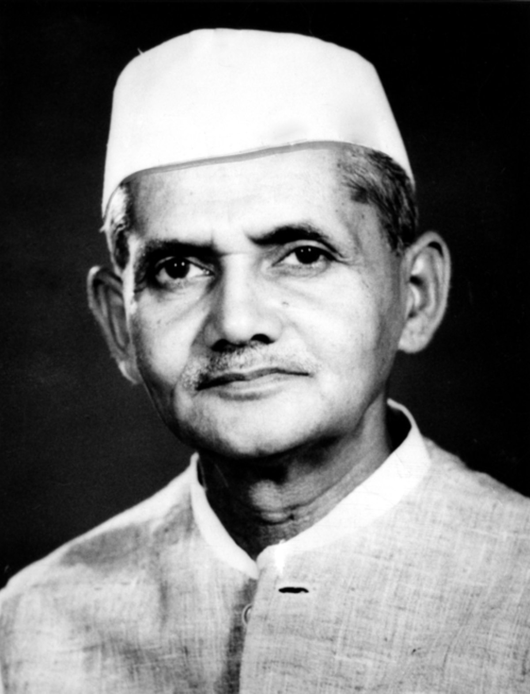

Born: 2 October 1904, Mughalsarai
Died: 11 January 1966, Tashkent, Uzbekistan
Party: Indian National Congress
Famously Known As: Man of Peace
Lal Bahadur Shastri was born on 2nd October 1904 in the state of Uttar Pradesh. He was
conferred with the title of Shastri which in English is termed as Scholar. At the age of only
sixteen, he left his studies to join the non-cooperation movement at the call of Gandhi. Later, he
graduated with a first-class degree from Kashi Vidyapeeth, a national institution of higher
education inaugurated by Gandhi. He was one of the most proactive Indian freedom fighters
who participated in various movements such as the Quit India movement, Civil Disobedience
movement and other satyagrahas led by Mahatma Gandhi. Lal Bahadur Shastri was
incarcerated by the British for considerable periods during his lifetime. Post attaining
independence, he first became the Home Minister and later was made the Prime Minister of
India in the year 1964.
Shastri was born on 2 October 1904 at the home of his maternal grandparents in a Kayastha family.
Shastri's paternal ancestors had been in the of the zamindar of Ramnagar near Banaras, and Shastri
lived there for the first year of his life. Shastri's father, Sharada Prasad Srivastava, was a school
teacher who later became a clerk in the revenue office at Allahabad, while his mother, Ramdulari Devi,
was the daughter of Munshi Hazari Lal, the headmaster and English teacher at a railway school in Mughalsarai.
Shastri was the second child and eldest son of his parents; he had an elder sister, Kailashi Devi (b. 1900).
In April 1906, when Shastri was hardly 18 months old, his father, who had only recently been promoted to the
post of deputy tahsildar, died in an epidemic of bubonic plague. Ramdulari Devi, then only 23 years old and
pregnant with her third child, took her two children and moved from Ramnagar to her father's house in
Mughalsarai and settled there for good. She gave birth to a daughter, Sundari Devi, in July 1906.
Thus, Shastri and his sisters grew up in the household of his maternal grandfather, Hazari Lalji.
However, Hazari Lalji himself died from a stroke in mid-1908. Thereafter, the family was looked after by
his brother (Shastri's great-uncle) Darbari Lal, who was the head clerk in the opium regulation department
at Ghazipur, and later by his son (Ramdulari Devi's cousin) Bindeshwari Prasad, a school teacher in Mughalsarai.